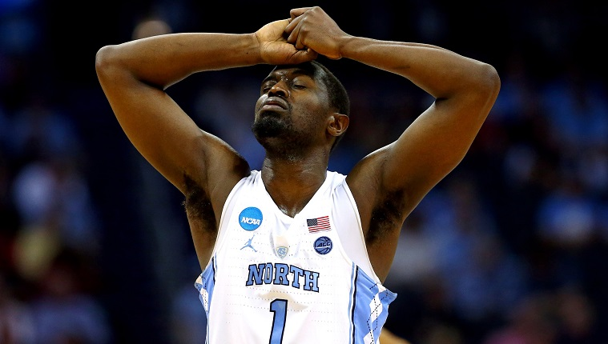

Looking to make the perfect chance? The odds may be slim-to-none but these statistics might help you on your way to getting a few games right.
Every champion since 2004 has been ranked in the top 12 of the Week 6 AP Top 25. Those 12 teams (seeds included) from this season, ranked in order back in Week 6, are: Arizona (2), Kansas (4), Purdue (1), Houston (1), UConn (1), Baylor (1), Marquette (2), Creighton (3), North Carolina (1), Gonzaga (5), Tennessee (2).
No champion has lost its first conference tournament game. This year, Alabama, Creighton, Kansas, Kentucky, Tennessee, and Duke all lost their first games and are highly seeded teams. So be suspicious of all of them except for Duke (obviously)
Every national champion since 1985 has at least made it to the semifinals of their league tournament.
No. 1 seeds are 150-2 all time vs. 16s. The No. 2s are 142-10 against 15s.
Every NCAA Tournament since 2013 has had a No. 5 seed or lower reach the Final Four.
2016 was thelast time all four 1-seeds reached the Elite Eight. Before that, it was 2009.
You almost never wanna go all chalk at the top in the first round. In 2017, all No. 1s 2s, 3s and 4s won their first-round game. Prior to that, the last time that happened was 2007. It's happened just six times since 1985.
No. 1 seeds have made the Final Four 60 times. That's narrowly more than the combined Final Four showings of Nos. 4-16 since seeding began.
Every NCAA champion since 1991 has come from a league with at least four NCAA bids in the field. Conspicuously, the Big East only sent three teams this season.
Only two times in the past 26 NCAA Tournaments have all four 2-seeds made the Sweet 16. It's happened just five times since 1985: '89, '95, '96, '09, '19. Pick at least one No. 2 to lose early. It's probably going to happen. Marquette and Arizona got got in 2023.
You're more likely to make the Sweet 16 as a 10-seed than as either an 8 or 9. No. 10s are 19-35 vs. No. 2 seeds, while 8-seeds are 16-59 and 9s are 6-69 vs. top seeds. Breaking down the math further: No. 10 seeds historically have a 15.8% chance of making the Sweet 16, while the combined chances for No. 8s and No. 9s is identical: 15.8%. Seeding matters.
In the past 12 NCAA Tournaments, teams seeded No. 5 or No. 6 that enter the tourney being ranked outside the top 30 at KenPom have a 10-12 record. Clemson and South Carolina fall into this category this year.
9,223,372,036,854,775,808: The number of different possible bracket outcomes. Wondering how to pronounce that number? I got you. That would be nine quintillion, two hundred twenty-three quadrillion, three hundred seventy-two trillion, thirty-six billion, eight hundred fifty-four million, seven hundred seventy-five thousand, eight hundred eight. It's much larger than the number of possible outcomes seen by Doctor Strange in Avengers: Infinity War.
A top-three seed has won the national title 22 of the past 24 tournaments. The exceptions: 2014 UConn (7) and 2023 UConn (4).
Gonzaga's made the Sweet 16 in eight straight tournaments. No other team has a streak longer than four.
There has never been a No. 1 or No. 2 seed that started the season unranked to go on and make the Final Four. Top-two seed in this year's bracket that was unranked at the start: Iowa State.
Pick at least one double-digit seed to reach the Sweet 16, because it has happened all but two years since '85. And 16 times there have been at least three double-digit seeds that made it to the regional semifinals. In 2021 and 2022, we had four: Oral Roberts, Oregon State, Syracuse and UCLA; Saint Peter's, Iowa State, Miami and Michigan. Last year, No. 15 seed Princeton. Challenge yourself in your bracket picks. It's going to happen again.